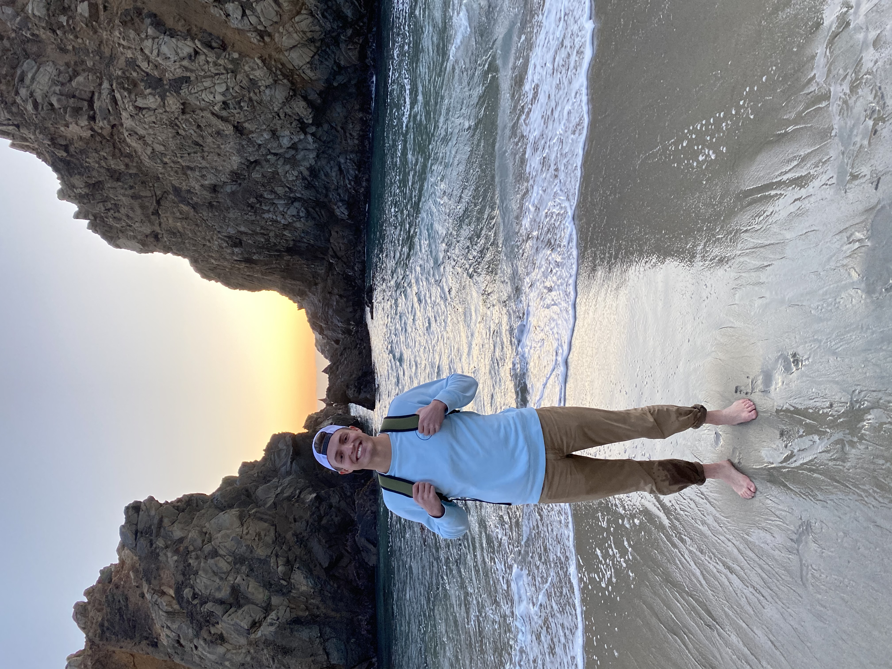
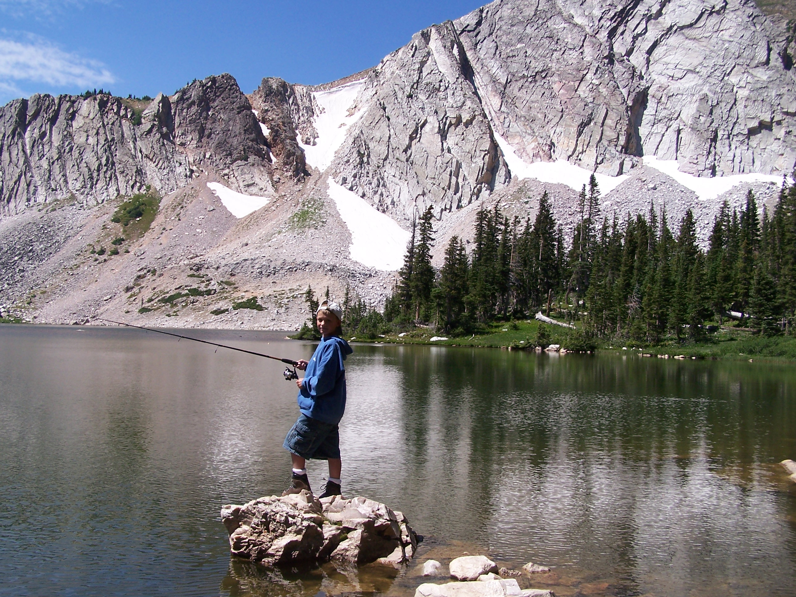
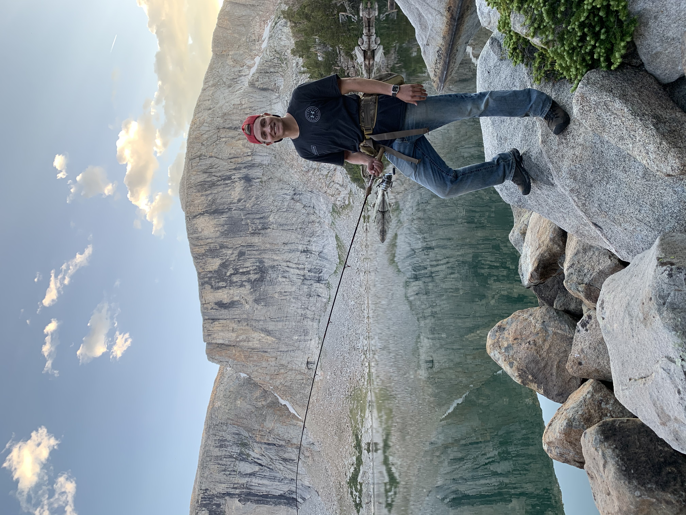
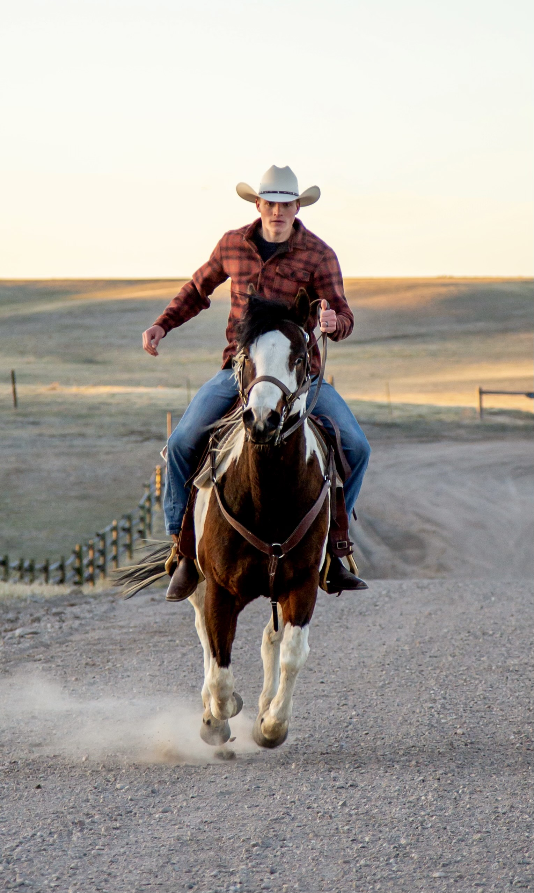
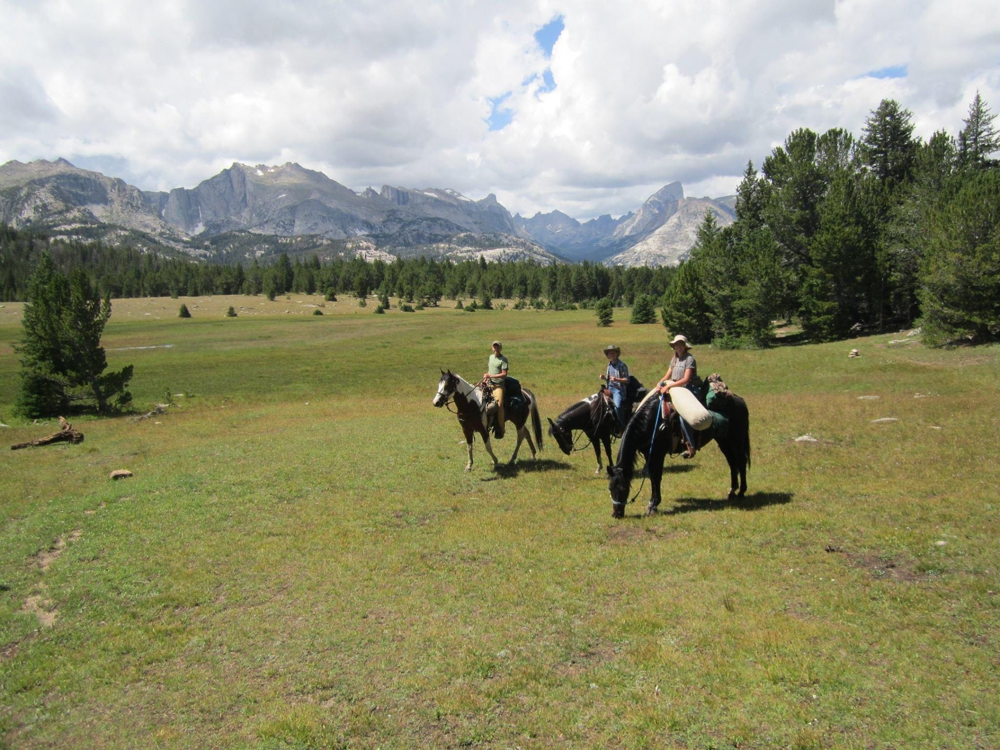

These are a few of my favorite things!

My beautiful wife Khiara and I were married May 1st, 2021. We first met on our missions in Brazil.
She showed me the ocean and I showed her the mountians.
When I was a little boy, I loved fishing high mountain lakes for trout.
I still love fishing high mountain lakes, especially in the Wind Rivers in Wyoming.
I grew up with horses and love to ride. This is my horse named Takota.
I love going on long horse-back trips with family and friends.

My deepest passion of all is archery hunting.

If you want to know where to find me, I'm probably on some mountian with my horse, my bow and a fishing pole taking a cat nap in the sun. To me that sounds like a life well lived.